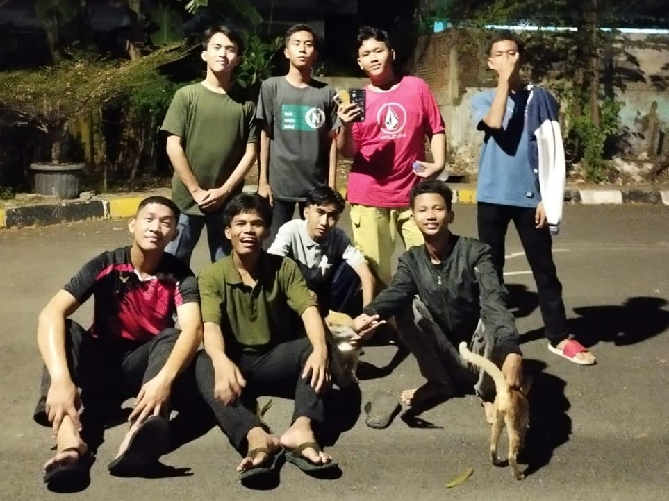

Halo! Nama saya Fikri Ibnu Hermawan. Saya seorang pelajar yang sedang belajar membuat website menggunakan HTML dan CSS.
| SEKOLAH | KOTA | TAHUN |
|---|---|---|
| SDN Yuniland 04 | Jakarta Timur | 2020 |
| SMPN 62 | Jakarta Timur | 2023 |
Kunjungi Blog Rimuru Tempest untuk melihat tentang Rimuru.